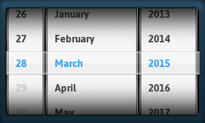
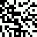
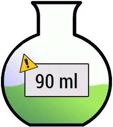

TouchGFX is a C++ graphics framework for limited-resource embedded systems based on ARM Cortex-M3, M4 and M7. You can use TouchGFX to create modern user interfaces with a smartphone-like look and feel on hardware platforms an order of magnitude less powerful (48-216 Mhz) than smartphones.
This repository, the TouchGFX Open Repository, contains numerous examples of, and ideas for, graphical components such as widgets, containers and "mixins" that are not part of the core distribution. They can be used as a source of inspiration for your applications free of charge; The components are all generalized to some extent but probably needs some sort of fine tuning to match your specific needs. Please note that none of the components are guaranteed to be maintained across new versions of TouchGFX.
You can request a full evaluation version of the framework, as well as order commercial licenses, on the TouchGFX website. Read more about the concept of widgets, containers and "mixins" in the TouchGFX documentation.
Contributing
This repository would greatly benefit from TouchGFX developers around the world sharing some of their work. Having a solid community that shares complex ideas for TouchGFX widgets is something that can help reduce development time greatly. If you would like to contribute to this repository you can fork and follow the guide below. When done, open a pull request to your branch. Each contribution should conform to the following standards:
- Create a suitable folder inside widgets/ for your contribution
- Supply at least source- and headerfiles, example code welcome but not necessary.
- Supply one or more screenshots of the widget in action. Graphical components that make up the widget are also welcome for clarity.
- Create a README.md containing, in markdown:
- Purpose of the widget - Any screenshots you may have could be shown here.
- Version(s) of TouchGFX you've tested your code on
- Functional description of the widget and it's configuration. Code can be verbatim formatted in .md by indenting with 4 spaces.
Please note that your contribution is subject to the terms that can be found here.
Thank you for your contribution!
List of Components
In the following table you can see the name, TouchGFX version, and a preview of the TouchGFX graphical components in this repository.
The TouchGFX version stated is the version that the component has been tested with. All components are expected to work with later versions of TouchGFX as well, however, this is not guaranteed.
| LinearGauge TouchGFX 4.1.1 
|
ExtendedZoomAnimationImage TouchGFX 4.1.1 |
Carousel TouchGFX 4.1.1 
|
| DotIndicator TouchGFX 4.1.1 
|
SwipeContainer TouchGFX 4.1.1 
|
Gauge TouchGFX 4.2 
|
| WheelSelector TouchGFX 4.2  |
CircularProgress TouchGFX 4.2 
|
Lens TouchGFX 4.2 
|
| Graph TouchGFX 4.3 
|
QRCode TouchGFX 4.3  |
Animated Gauge TouchGFX 4.4.1  |
Links
Videos
- TouchGFX Demo on STM32F429 Evaluation Board 4.3"
- TouchGFX Demo on STM32F429 Discovery Board 2.4"
- TouchGFX Demo on Embedded Artists LPC4088 Display Module 4.3"
- TouchGFX Demo on Embedded Artists LPC4357 DevKit 4.3"
- TouchGFX Demo on TouchGFX Demo Board NXP 4357 4.3"
Screenshots

License Terms
All software, including widgets, containers and mixins and codes found in this repository (hereinafter referred to collectively as the “Software”) are available to download free of charge and the Software may be used for both commercial and non-commercial purposes. You may use, copy, redistribute and modify the Software as needed. The code is distributed in the hope that it will be useful.
Read Full License/Contribution Terms text here.
Ownership
The TouchGFX framework is a Draupner Graphics product.